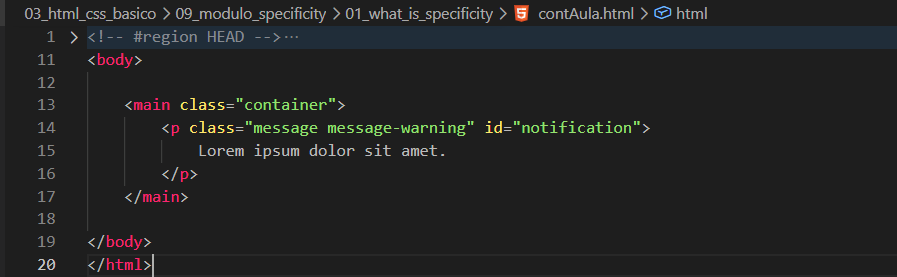
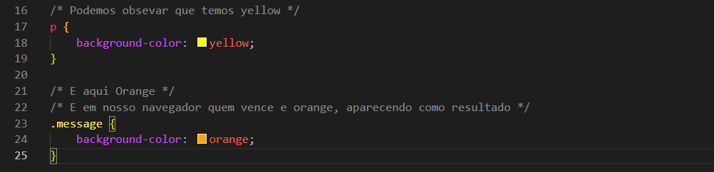

What is Specificity
Intro
Agora iremos ver um pouco sobre especificidade
Agora iremos ver um pouco sobre especificidade
HTML:

CSS:

Nesse caso como resultado obtivemos o resultado da class pois ele e mais especificico e tem uma hierarquia maior doque apenas selecionar pela tag p.
Especificidade é a regra que o CSS usa para decidir qual estilo vai ganhar quando vários seletores tentam estilizar o mesmo elemento.
Quanto mais específico for o seletor, mais prioridade ele tem.
Se dois tiverem a mesma força, vence o que foi declarado por último no CSS.
É o sistema que define quem manda no estilo quando há conflito.